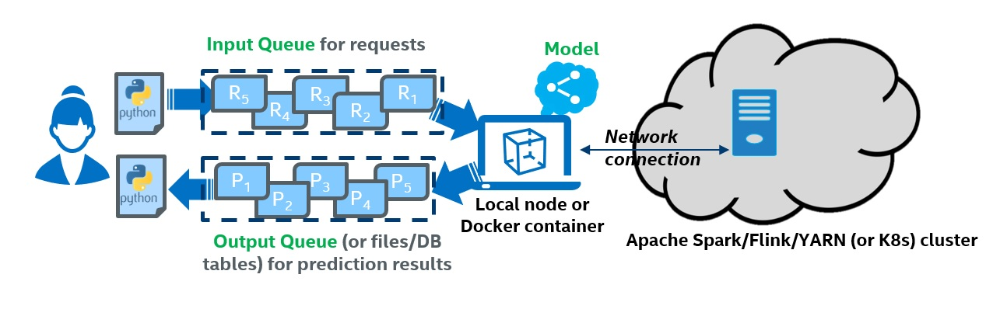

Cluster Serving
Programming Guide
Analytics Zoo Cluster Serving is a lightweight distributed, real-time serving solution that supports a wide range of deep learning models (such as TensorFlow, PyTorch, Caffe, BigDL and OpenVINO models). It provides a simple pub/sub API, so that the users can easily send their inference requests to the input queue (using a simple Python API); Cluster Serving will then automatically manage the scale-out and real-time model inference across a large cluster (using distributed streaming frameworks such as Apache Spark Streaming, Apache Flink, etc.)
The overall architecture of Analytics Zoo Cluster Serving solution is illustrated as below:

This page contains the guide for you to run Analytics Zoo Cluster Serving, including following:
Quick Start
This section provides a quick start example for you to run Analytics Zoo Cluster Serving. To simplify the example, we use docker to run Cluster Serving. If you do not have docker installed, install docker first. The quick start example contains all the necessary components so the first time users can get it up and running within minutes:
- A docker image for Analytics Zoo Cluster Serving (with all dependencies installed)
- A sample configuration file
- A sample trained TensorFlow model, and sample data for inference
- A sample Python client program
Use one command to run Cluster Serving container. (We provide quick start model in older version of docker image, for newest version, please refer to following sections and we remove the model to reduce the docker image size).
docker run --name cluster-serving -itd --net=host intelanalytics/zoo-cluster-serving:0.9.0
Log into the container using docker exec -it cluster-serving bash, go to Cluster Serving working directory by cd cluster-serving.
You can see prepared TensorFlow frozen ResNet50 model in resources/model directory with following structure.
cluster-serving |
-- | model
-- frozen_graph.pb
-- graph_meta.json
Modify config.yaml and add following to filter: config
data:
shape: [3,224,224]
filter: topN(1)
This will tell the shape of input image is [3,224,224] and rank Top-1 result of the model output.
Start Cluster Serving using cluster-serving-start.
Run python program python3 image_classification_and_object_detection_quick_start.py -i resources/test_image to push data into queue and get inference result.
Then you can see the inference output in console.
image: fish1.jpeg, classification-result:class: 5's prob: 0.18204997
image: dog1.jpeg, classification-result:class: 267's prob: 0.27166227
image: cat1.jpeg, classification-result:class: 292's prob: 0.32633427
Wow! You made it!
Note that the Cluster Serving quick start example will run on your local node only. Check the Deploy Your Own Cluster Serving section for how to configure and run Cluster Serving in a distributed fashion.
For more details, refer to following sections.
Workflow Overview
The figure below illustrates the simple 3-step "Prepare-Launch-Inference" workflow for Cluster Serving.
1. Install and prepare Cluster Serving environment on a local node:
- Copy a previously trained model to the local node; currently TensorFlow, PyTorch, Caffe, BigDL and OpenVINO models are supported.
- Install Analytics Zoo on the local node (e.g., using a single pip install command)
- Configure Cluster Server on the local node, including the file path to the trained model and the address of the cluster (such as Apache Hadoop YARN cluster, K8s cluster, etc.). Please note that you only need to deploy the Cluster Serving solution on a single local node, and NO modifications are needed for the (YARN or K8s) cluster.
2. Launch the Cluster Serving service
You can launch the Cluster Serving service by running the startup script on the local node. Under the hood, Cluster Serving will automatically deploy the trained model and serve the model inference requests across the cluster in a distributed fashion. You may monitor its runtime status (such as inference throughput) using TensorBoard.
3. Distributed, real-time (streaming) inference
Cluster Serving provides a simple pub/sub API to the users, so that you can easily send the inference requests to an input queue (currently Redis Streams is used) using a simple Python API.
Cluster Serving will then read the requests from the Redis stream, run the distributed real-time inference across the cluster (using Flink), and return the results back through Redis. As a result, you may get the inference results again using a simple Python API.
Deploy your Own Cluster Serving
1. Installation
It is recommended to install Cluster Serving by pulling the pre-built Docker image to your local node, which have packaged all the required dependencies. Alternatively, you may also manually install Cluster Serving (through either pip or direct downloading), Redis on the local node.
Docker
docker pull intelanalytics/zoo-cluster-serving
then, (or directly run docker run, it will pull the image if it does not exist)
docker run --name cluster-serving -itd --net=host intelanalytics/zoo-cluster-serving:0.9.0
Log into the container
docker exec -it cluster-serving bash
cd ./cluster-serving, you can see all the environments are prepared.
Yarn user
For Yarn user using docker, start Flink on Yarn inside the container. The other operations are the same.
Manual installation
Requirements
Non-Docker users need to install Flink 1.10.0+, 1.10.0 by default, Redis 5.0.0+, 5.0.5 by default.
After preparing dependencies above, make sure the environment variable $FLINK_HOME (/path/to/flink-FLINK_VERSION-bin), $REDIS_HOME(/path/to/redis-REDIS_VERSION) is set before following steps.
Install Cluster Serving by download release
For users who need to deploy and start Cluster Serving, download Cluster Serving zip analytics-zoo-xxx-cluster-serving-all.zip from here and unzip it, then run source cluster-serving-setup.sh.
For users who need to do inference, aka. predict data only, download Analytics Zoo python zip analytics-zoo-xxx-cluster-serving-python.zip from here and run export PYTHONPATH=$PYTHONPATH:/path/to/zip to add this zip to PYTHONPATH environment variable.
Install Cluster Serving by pip
Download package from here, run following command to install Cluster Serving
pip install analytics_zoo_serving-*.whl
For users who need to deploy and start Cluster Serving, run cluster-serving-init to download and prepare dependencies.
For users who need to do inference, aka. predict data only, the environment is ready.
2. Configuration
How to Config
After Installation, you will see a config file config.yaml in your current working directory. This file contains all the configurations that you can customize for your Cluster Serving. See an example of config.yaml below.
## Analytics Zoo Cluster Serving Config Example
model:
# model path must be set
path: /opt/work/model
params:
# default, 4
core_num:
Preparing Model
Currently Analytics Zoo Cluster Serving supports TensorFlow, OpenVINO, PyTorch, BigDL, Caffe models. Supported types are listed below.
You need to put your model file into a directory with layout like following according to model type, note that only one model is allowed in your directory. Then, set in config.yaml file with model:path:/path/to/dir.
Tensorflow* Tensorflow SavedModel***
|-- model
|-- saved_model.pb
|-- variables
|-- variables.data-00000-of-00001
|-- variables.index
Tensorflow Frozen Graph
|-- model
|-- frozen_graph.pb
|-- graph_meta.json
Tensorflow Checkpoint Please refer to freeze checkpoint example
Pytorch
|-- model
|-- xx.pt
Running Pytorch model needs extra dependency and config. Refer to here to install dependencies, and set environment variable $PYTHONHOME to your python, e.g. python could be run by $PYTHONHOME/bin/python and library is at $PYTHONHOME/lib/.
OpenVINO
|-- model
|-- xx.xml
|-- xx.bin
BigDL
|--model
|-- xx.model
Caffe
|-- model
|-- xx.prototxt
|-- xx.caffemodel
Data Configuration
The field data contains your input data configuration.
- src: the queue you subscribe for your input data, e.g. default config of Redis on local machine is
localhost:6379. Note that please use the host address in your network instead of localhost or 127.0.0.1 when you run serving in cluster, and make sure other nodes in cluster could also recognize this address. - shape: the shape of your input data. e.g. [[1],[3,224,224],[3]], if your model contains only one input, brackets could be omitted.
- filter: the post-processing of pipeline, could be none. Except none, currently supported filters are,
Top-N, e.g. topN(1) represents Top-1 result is kept and returned with index. User should follow this schema topN(n). Noted if the top-N number is larger than model output size of the the final layer, it would just return all the outputs.
Other Configuration
The field params contains your inference parameter configuration.
- core_number: the batch size you use for model inference, usually the core number of your machine is recommended. Thus you could just provide your machine core number at this field. We recommend this value to be not smaller than 4 and not larger than 512. In general, using larger batch size means higher throughput, but also increase the latency between batches accordingly.
3. Launching Service
This section is about how to start and stop Cluster Serving.
Start
You can use following command to start Cluster Serving.
cluster-serving-start
Use cluster-serving-start -p 5 to start Cluster Serving with Flink parallelism 5.
Use cluster-serving-start -c config_path to path config path config_path to Cluster Serving manually.
Stop
You can use Flink UI in localhost:8081 by default, to cancel your Cluster Serving job.
Shut Down
You can use following command to shutdown Cluster Serving. This operation will stop all running services related to Cluster Serving. Note that your data in Redis will be removed when you shutdown.
cluster-serving-shutdown
If you are using Docker, you could also run docker rm to shutdown Cluster Serving.
HTTP Server (for sync API only)
If you want to use sync API for inference, you should start a provided HTTP server first. User can submit HTTP requests to the HTTP server through RESTful APIs. The HTTP server will parse the input requests and pub them to Redis input queues, then retrieve the output results and render them as json results in HTTP responses.
Prepare
User can download a analytics-zoo-${VERSION}-http.jar from the Nexus Repository with GAVP:
<groupId>com.intel.analytics.zoo</groupId>
<artifactId>analytics-zoo-bigdl_${BIGDL_VERSION}-spark_${SPARK_VERSION}</artifactId>
<version>${ZOO_VERSION}</version>
User can also build from the source code:
mvn clean package -P spark_2.4+ -Dmaven.test.skip=true
Start the HTTP Server
User can start the HTTP server with following command.
java -jar analytics-zoo-bigdl_${BIGDL_VERSION}-spark_${SPARK_VERSION}-${ZOO_VERSION}-http.jar
And check the status of the HTTP server with:
curl http://${BINDED_HOST_IP}:${BINDED_HOST_PORT}/
If you get a response like "welcome to analytics zoo web serving frontend", that means the HTTP server is started successfully.
Start options
User can pass options to the HTTP server when start it:
java -jar analytics-zoo-bigdl_${BIGDL_VERSION}-spark_${SPARK_VERSION}-${ZOO_VERSION}-http.jar --redisHost="172.16.0.109"
All the supported parameter are listed here: * interface: the binded server interface, default is "0.0.0.0" * port: the binded server port, default is 10020 * redisHost: the host IP of redis server, default is "localhost" * redisPort: the host port of redis server, default is 6379 * redisInputQueue: the input queue of redis server, default is "serving_stream" * redisOutputQueue: the output queue of redis server, default is "result:" * parallelism: the parallelism of requests processing, default is 1000 * timeWindow: the timeWindow wait to pub inputs to redis, default is 0 * countWindow: the timeWindow wait to ub inputs to redis, default is 56 * tokenBucketEnabled: the switch to enable/disable RateLimiter, default is false * tokensPerSecond: the rate of permits per second, default is 100 * tokenAcquireTimeout: acquires a permit from this RateLimiter if it can be obtained without exceeding the specified timeout(ms), default is 100
User can adjust these options to tune the performance of the HTTP server.
4. Model Inference
We support Python API and HTTP RESTful API for conducting inference with Data Pipeline in Cluster Serving.
Python API
For Python API, the requirements of python packages are opencv-python(for raw image only), pyyaml, redis. You can use InputQueue and OutputQueue to connect to data pipeline by providing the pipeline url, e.g. my_input_queue = InputQueue(host, port) and my_output_queue = OutputQueue(host, port). If parameters are not provided, default url localhost:6379 would be used.
We provide some basic usages here, for more details, please see API Guide.
Async API
Async API provide method to enqueue data, the method would not block and user can query the data anytime afterwards.
To input data to queue, you need a InputQueue instance, and using enqueue method, for each input, give a key correspond to your model or give arbitrary key if your model does not care about it.
To enqueue an image
from zoo.serving.client import InputQueue
input_api = InputQueue()
input_api.enqueue('my-image1', user_define_key={"path: 'path/to/image1'})
To enqueue an instance containing 1 image and 2 ndarray
from zoo.serving.client import InputQueue
import numpy as np
input_api = InputQueue()
t1 = np.array([1,2])
t2 = np.array([[1,2], [3,4]])
input_api.enqueue('my-instance', img={"path": 'path/to/image'}, tensor1=t1, tensor2=t2)
There are 4 types of inputs in total, string, image, tensor, sparse tensor, which could represents nearly all types of models. For more details of usage, go to API Guide
To get data from queue, you need a OutputQueue instance, and using query or dequeue method. The query method takes image uri as parameter and returns the corresponding result. The dequeue method takes no parameter and just returns all results and also delete them in data queue. See following example.
from zoo.serving.client import OutputQueue
output_api = OutputQueue()
img1_result = output_api.query('img1')
all_result = output_api.dequeue() # the output queue is empty after this code
Consider the code above,
img1_result = output_api.query('img1')
Sync API
Sync API provide method to predict data, the method would block until the result is available.
User need to create a InputQueue instance with sync=True and frontend_url=frontend_server_url argument.
from zoo.serving.client import InputQueue
input_api = InputQueue(sync=True, frontend_url=frontend_server_url)
response = input_api.predict(request_json_string)
print(response.text)
example of request_json_string is
'{
"instances" : [ {
"ids" : [ 100.0, 88.0 ]
}]
}'
This API is also a python support of Restful API section, so for more details of input format, refer to it.
RESTful API
This part describes API endpoints and end-to-end examples on usage. The requests and responses are in JSON format. The composition of them depends on the requests type or verb. See the APIs for details. In case of error, all APIs will return a JSON object in the response body with error as key and the error message as the value:
{
"error": <error message string>
}
Predict API
URL
POST http://host:port/predict
Request Example for images as inputs:
curl -d \
'{
"instances": [
{
"image": "/9j/4AAQSkZJRgABAQEASABIAAD/7RcEUGhvdG9za..."
},
{
"image": "/9j/4AAQSkZJRgABAQEASABIAAD/7RcEUGhvdG9za..."
}
]
}' \
-X POST http://host:port/predict
Response Example
{
"predictions": [
"{value=[[903,0.1306194]]}",
"{value=[[903,0.1306194]]}"
]
}
Request Example for tensor as inputs:
curl -d \
'{
"instances" : [ {
"ids" : [ 100.0, 88.0 ]
}, {
"ids" : [ 100.0, 88.0 ]
} ]
}' \
-X POST http://host:port/predict
Response Example
{
"predictions": [
"{value=[[1,0.6427843]]}",
"{value=[[1,0.6427842]]}"
]
}
Another request example for composition of scalars and tensors.
curl -d \
'{
"instances" : [ {
"intScalar" : 12345,
"floatScalar" : 3.14159,
"stringScalar" : "hello, world. hello, arrow.",
"intTensor" : [ 7756, 9549, 1094, 9808, 4959, 3831, 3926, 6578, 1870, 1741 ],
"floatTensor" : [ 0.6804766, 0.30136853, 0.17394465, 0.44770062, 0.20275897, 0.32762378, 0.45966738, 0.30405098, 0.62053126, 0.7037923 ],
"stringTensor" : [ "come", "on", "united" ],
"intTensor2" : [ [ 1, 2 ], [ 3, 4 ], [ 5, 6 ] ],
"floatTensor2" : [ [ [ 0.2, 0.3 ], [ 0.5, 0.6 ] ], [ [ 0.2, 0.3 ], [ 0.5, 0.6 ] ] ],
"stringTensor2" : [ [ [ [ "come", "on", "united" ], [ "come", "on", "united" ], [ "come", "on", "united" ], [ "come", "on", "united" ] ], [ [ "come", "on", "united" ], [ "come", "on", "united" ], [ "come", "on", "united" ], [ "come", "on", "united" ] ] ], [ [ [ "come", "on", "united" ], [ "come", "on", "united" ], [ "come", "on", "united" ], [ "come", "on", "united" ] ], [ [ "come", "on", "united" ], [ "come", "on", "united" ], [ "come", "on", "united" ], [ "come", "on", "united" ] ] ] ]
}]
}' \
-X POST http://host:port/predict
Another request example for composition of sparse and dense tensors.
curl -d \
'{
"instances" : [ {
"sparseTensor" : {
"shape" : [ 100, 10000, 10 ],
"data" : [ 0.2, 0.5, 3.45, 6.78 ],
"indices" : [ [ 1, 1, 1 ], [ 2, 2, 2 ], [ 3, 3, 3 ], [ 4, 4, 4 ] ]
},
"intTensor2" : [ [ 1, 2 ], [ 3, 4 ], [ 5, 6 ] ]
}]
}' \
-X POST http://host:port/predict
Metrics API
URL
GET http://host:port/metrics
Response example:
[
{
name: "zoo.serving.redis.get",
count: 810,
meanRate: 12.627772820651845,
min: 0,
max: 25,
mean: 0.9687099303718213,
median: 0.928579,
stdDev: 0.8150031623593447,
_75thPercentile: 1.000047,
_95thPercentile: 1.141443,
_98thPercentile: 1.268665,
_99thPercentile: 1.608387,
_999thPercentile: 25.874584
}
]
Optional Operations
Update Model or Configurations
To update your model, you could replace your model file in your model directory, and restart Cluster Serving by cluster-serving-restart. Note that you could also change your configurations in config.yaml and restart serving.
Logs and Visualization
Logs
To see log, please refer to Flink UI localhost:8081 by default.
Visualization
To visualize Cluster Serving performance, go to your flink job UI, default localhost:8081, and go to Cluster Serving job -> metrics. Add numRecordsOut to see total record number and numRecordsOutPerSecond to see throughput.
See example of visualization: